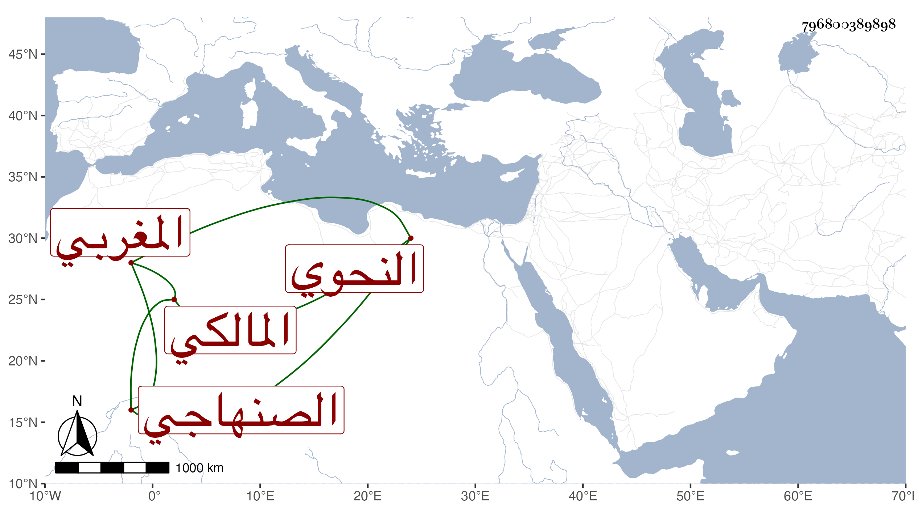

0902Sakhawi.DawLamic.ITO20230111-ara1.EIS1600.796800389898
Biography ID: 796800389898
228
محمد بن محمد بن داود أبو عبد الله الصنهاجي المغربي النحوي المالكي ويعرف بابن آجروم بالمد ولذا يقال لمقدمته الشهيرة الجرومية رواها عنه أبو عبد الله محمد ابن إبراهيم الحضرمي القاضي قال لي بعض فضلاء المغاربة أن وفاته تقرب من سنة عشر وثمانمائة وفيه نظر وأورد أبو عبد الله الرعي اسناده بها فقال أنا محمد بن بن عبد الملك بن علي بن عيد الملك بن عبد الله القيسي اللسوري الغرناطي المالكي حدثني الخطيب أبو جعفر أحمد بن محمد بن سالم الجذامي عن أبي عبد الله الحضرمي عنه . قلت وقد ترجمته في التاريخ الكبير فيمن لم يسم جده بما ينازع فيه .
